Laboratorio del hospital público
Construida · JujuyUn laboratorio viejo, demolido por dentro y vuelto a hacer: instalaciones nuevas, superficies lavables y muebles a medida. De cómo estaba a cómo quedó.
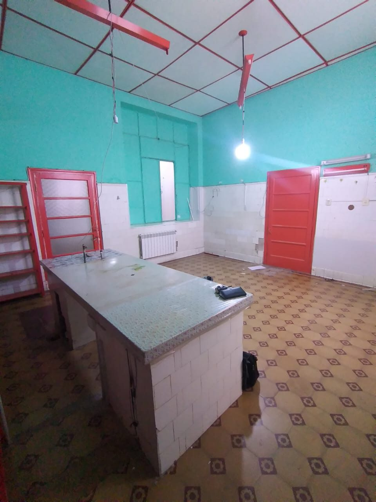
antes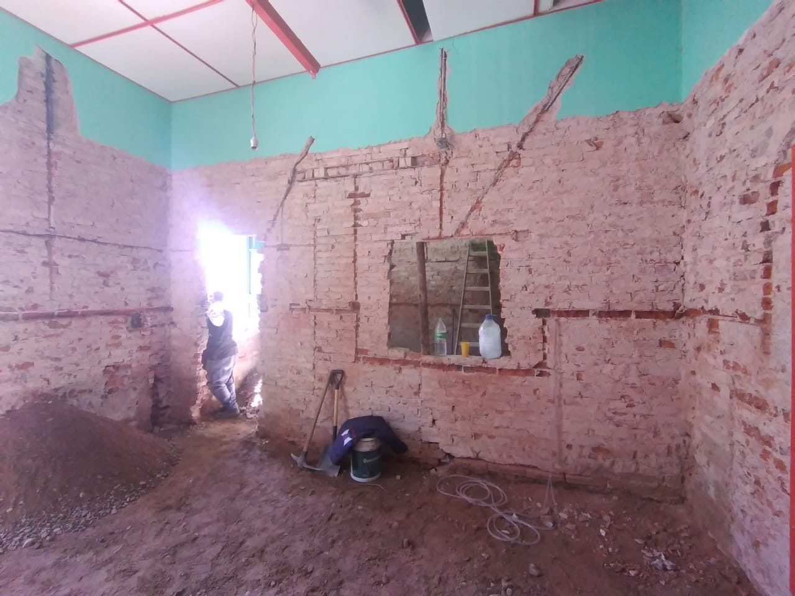
durante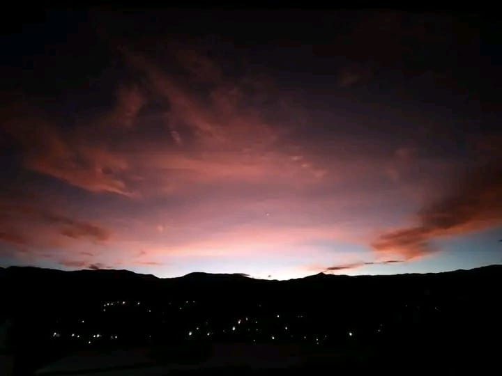
Proyecto, dirección y construcción en la Quebrada, Jujuy, Salta y el sur de Bolivia. Cada obra se dibuja, se piensa en maqueta y se construye con materiales elegidos uno por uno.
No todos los proyectos siguen el mismo camino. Algunos se construyen, otros quedan en maqueta esperando su momento. Pero todos empiezan igual: dibujando.
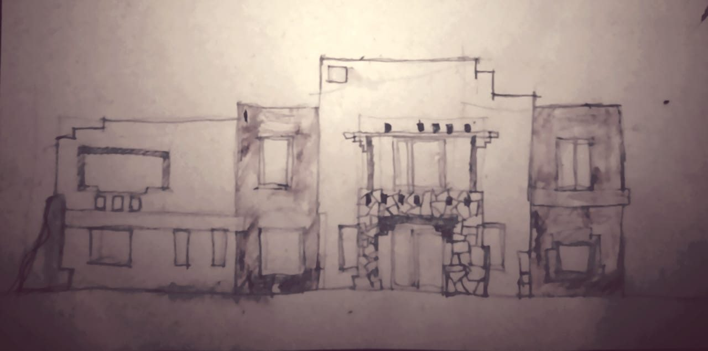
La primera idea, a mano. Ahí se decide qué se ve desde la calle, dónde entra la luz y qué se hace con la piedra.
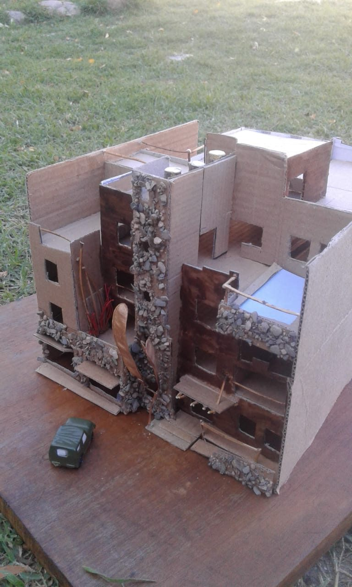
Para que el cliente vea su casa antes de que exista, y para corregir lo que en el papel no se ve.
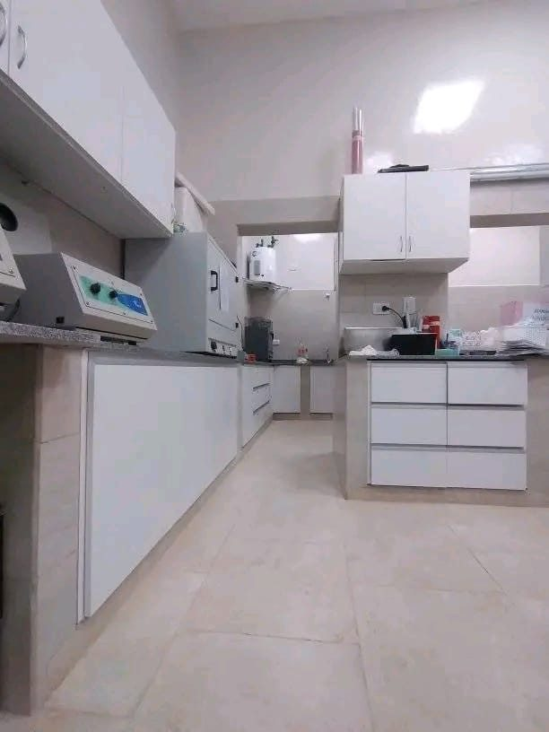
Dirección y construcción con el mismo equipo, y el seguimiento de cada detalle hasta la entrega.
Un laboratorio viejo, demolido por dentro y vuelto a hacer: instalaciones nuevas, superficies lavables y muebles a medida. De cómo estaba a cómo quedó.

antes
duranteFachada nueva para un hostal de esquina: zócalo y pilar de piedra, carpinterías en rojo y el mural de siempre, ahora enmarcado.
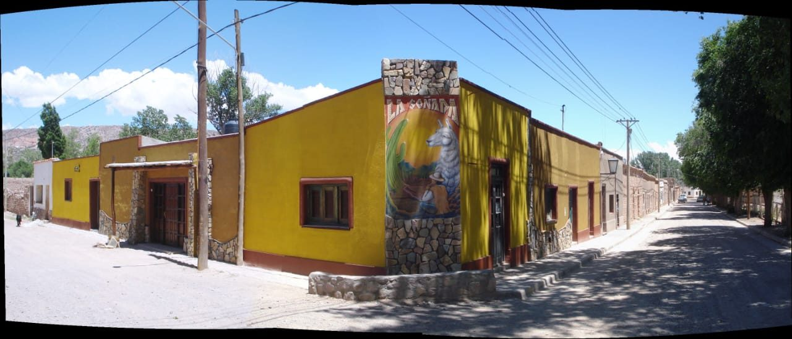
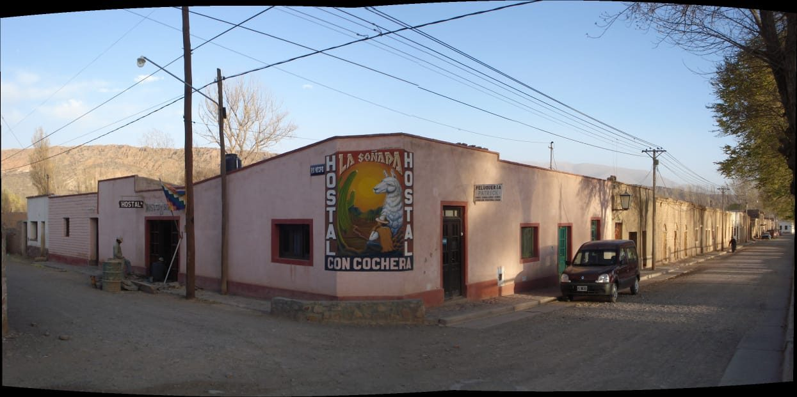
antesdespués→ el amarillo lo eligió el cliente. La piedra, nosotros.
Un proyecto que quedó en maqueta. Muros de adobe, arcos de piedra y una galería larga mirando al patio.
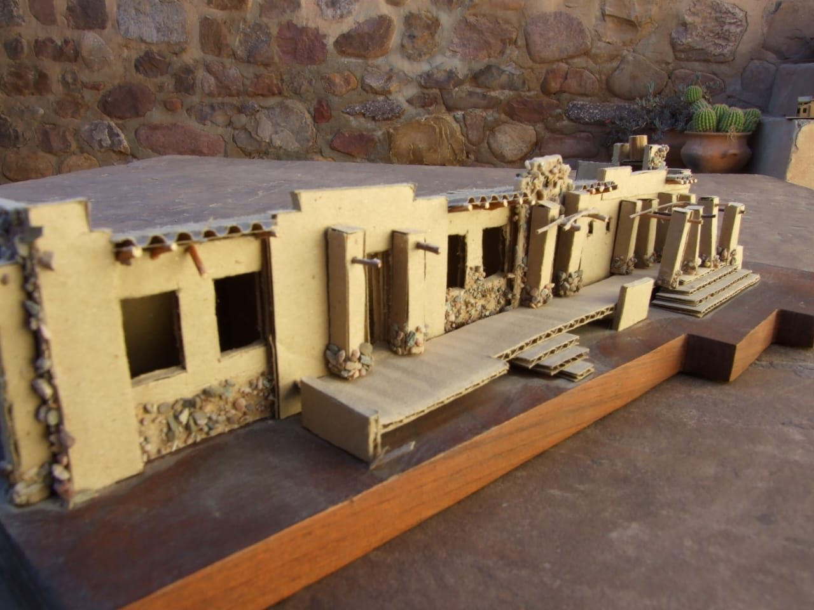
la maquetaEl terreno con la obra empezando, y el dibujo de cómo iba a quedar la fachada larga sobre la calle.
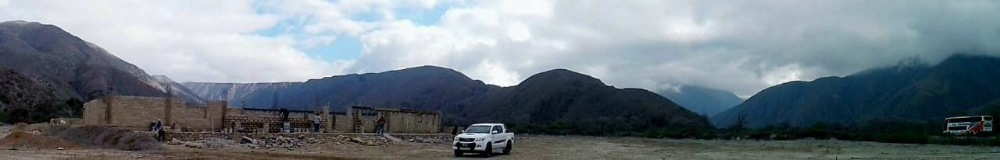
la obra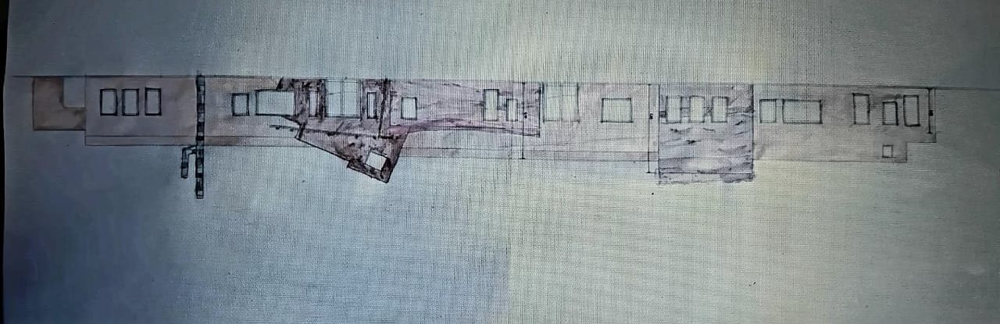
cómo iba a quedarVolúmenes simples, un muro de piedra que atraviesa la casa y una terraza arriba para mirar los cerros.
Muchas obras quedan en maqueta o en planos. También son parte del trabajo, y acá tienen su lugar.
Hay obras que se resuelven con el corralón de siempre, y está bien. Y hay otras que piden una búsqueda más larga.
«No fabrico los pisos, pero los busco como si los fabricara.»— Walter
Trabajamos en Humahuaca y la Quebrada, San Salvador de Jujuy, Salta y el sur de Bolivia.
Cinco preguntas cortas. Con eso te puedo decir rápido si es algo que hacemos y por dónde arrancar.
Elegí la que más se parezca.
La zona del terreno o de la obra.
Para saber en qué punto estás.
Aproximada. Sirve para proponerte algo posible.
Cuándo te gustaría empezar.
Revisá y mandalo por WhatsApp.